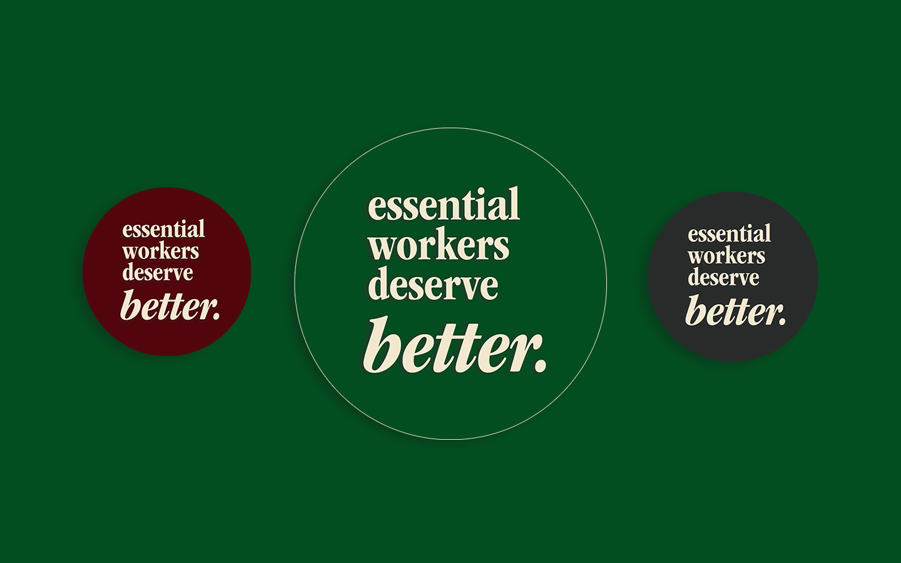
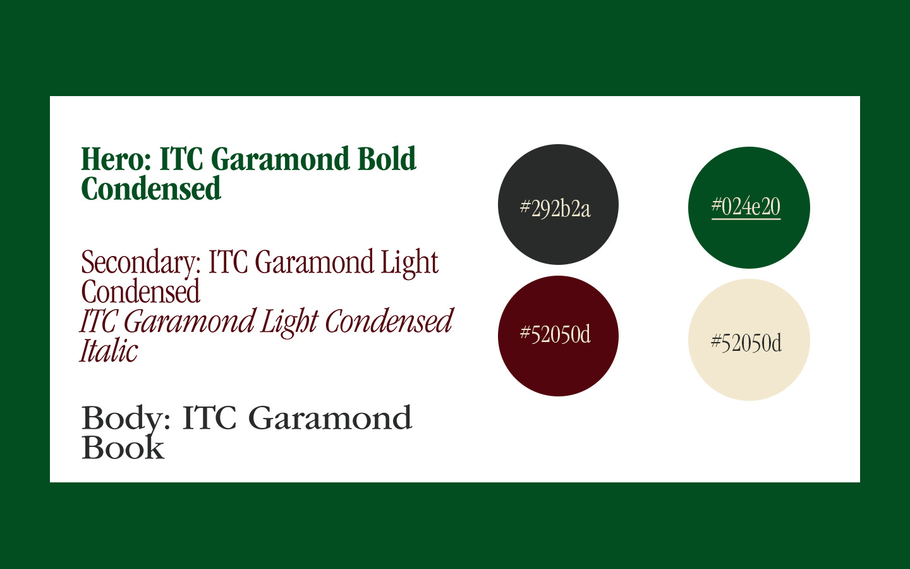
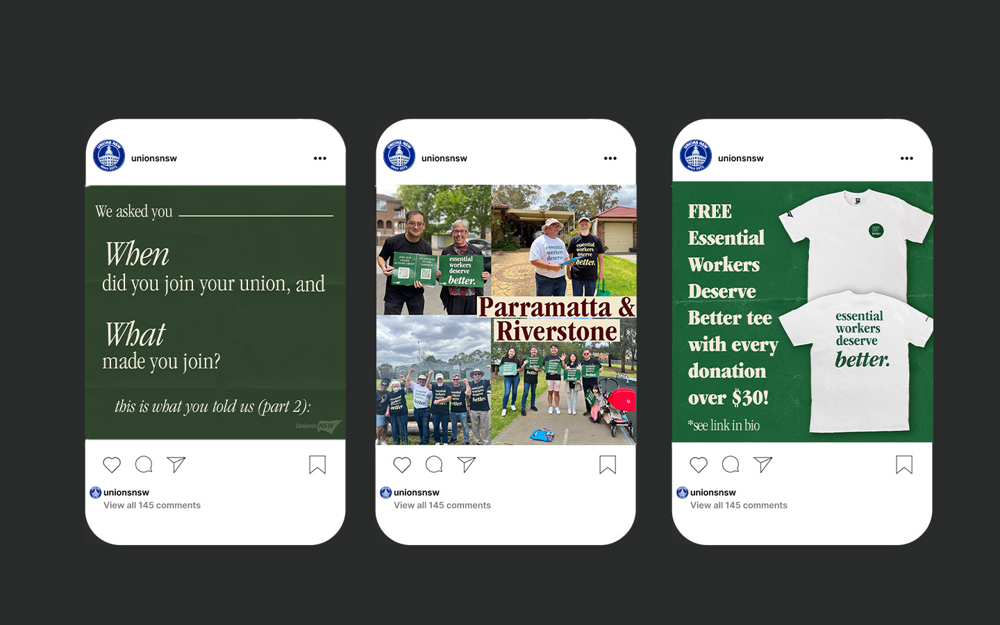

2023 NSW State Election Campaign Brand.
This campaign was inspired by "It's Time"-era hopefulness and political optimism, centering workers as key players in a message designed to motivate.
Deliverables included logos, logotypes, print materials (flyers, petitions, corflutes, selfie signs), campaign images, merchandise, social media content.
Logos

Fonts and colours

Social media content

Field and print material

Merchandise

୨⎯ " " ⎯୧